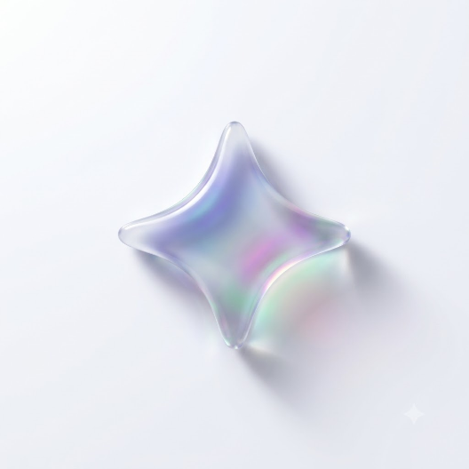

반가워요!
디자인시스템 가이드 봇
모아입니다
컴포넌트에 대해 궁금하신 점을
물어보면 바로 찾아드릴게요

시작하려면
Gemini API 키가 필요해요
발급하러 가기
키 발급 방법
1. 발급하러 가기를 눌러 Google AI Studio에 로그인하세요.
2. 좌측 메뉴에서 ‘Get API key’를 선택하세요.
3. ‘Create API key’ 버튼을 눌러 새 키를 생성하세요.
4. 생성된 키를 복사해 입력창에 붙여넣으세요.